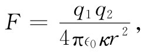

现在，我们将证明在电介质存在的情况下，关于静电学的某些相对普遍的定理。我们已经看到，如果电容器的两平行板之间充满了电介质，则电容会增大某一定因子。还可以证明，这对于任何 形状的电容器都是正确的，只要在两个导体附近的整个区域里都充满一种均匀的线性电介质就行。在没有电介质时，待解的方程组为：
当有电介质时，前一个式给修改了。因而，我们代之而有：
现在，由于我们认为κ处处相等，这最后两方程还可以写成：
因此，对于κE和对于E0 就有相同的方程组，它们具备κE=E0 的解。换句话说，比起没有电介质时的情况，场处处都减弱了一个因子1/κ。由于电压是电场的线积分，所以电压也被降低了这同一因子。由于电容器电极上的电荷在两种情况下都被认为是相同的，式（10.2）就告诉我们，在一个处处都充满着均匀电介质的情况下，电容增大了κ倍。
现在我们要问，在有电介质时两个带电导体之间力 该如何？考虑一种处处均匀的液态电介质。我们早已知道，一种求力的方法是把能量相对于一适当距离取微商。如果两导体上的电荷等量异号，能量就是U=Q2 /（2C），其中C为它们的电容。利用虚功原理，任何一个分力都由微商给出。例如，
由于电介质会给电容增大一个因子κ，因此所有力就将减少 相同的因子。
必须强调，我们上面所说的只有对于液态电介质才正确。嵌在固态电介质里的导体的任何运动，都会改变电介质的机械应力条件，以及不但引起电介质里某种机械能量的变化，而且改变其电学性质。在液体中移动导体，则不会使液体发生变化。液体会移至一个新的地方，但它的电学性质却没有改变。
许多较古老的电学书往往从这样一个“基本”定律出发，即两电荷间的力为
 （10.29）
这种观点完全不能令人满意。其一是，它并非普遍正确，它只对充满某种液体的世界才正确。其次，它有赖于κ是常数这么一个事实，这对于大多数实际材料来说只是近似正确。从电荷处于真空 中的库仑定律出发会好得多，那永远是正确的（对于静止电荷来说）。
在固体中究竟会发生什么呢？这是一个十分困难的问题，至今还未得到解决，因为在某种意义上它是不确定的。如果你把电荷放进一固态电介质里面去，就将涉及各种压强和应变。假如不把压缩固体所需的机械能量也包括进去的话，就不能同虚功原理打交道。而一般说来，要对电力和起因于固体材料本身的机械力做出唯一的区别是相当困难的。幸而，实际上还没有人需要弄清楚所提问题的答案。他有时可能想要知道在一固体中将产生多少应变，而这是能够算出的，但比起我们对于液体所获得的那种简单结果要复杂得多。
在电介质理论中有一个非常复杂的问题：为什么一个带电物体会吸起一些小块电介质？如果你在一个干燥的日子里梳一下头发，那梳子会立即吸起一些小纸片来。如果你偶然想起这件事，你大概认为梳子上有一种电荷而纸片上则有与之异号的电荷。但纸片开始时是电中性的。它并没有任何净电荷，但不管怎样它终于被吸引了。真的！有时纸片会来到梳子上，然后又飞开，在它接触到梳子之后就立刻被排斥了。这其中原因当然在于：当纸片接触到梳子时，获得了一些负电荷，此后同号电荷便互相排斥了。但这并没有回答原来的问题。首先，为什么纸片会朝着梳子跑来呢？
答案得用电介质放在电场中时会被极化来求得。两种符号的极化电荷都存在，它们分别被梳子所吸引和排斥。然而，会有一个净吸引力，因为靠近梳子一边的电场比远离梳子那一边的电场较强——梳子并非一个无限大板块。它的电荷是局域性的。一块电中性纸片在一个平行板电容器里将不会被哪一块板所吸引。电场的变化才是这个吸引机制的本质部分。
如图10-8上所示，一块电介质总是从一弱场区域被拉向场较强的区域。事实上，人们能够证明，对于细小物体这个力正比于场强平方 的梯度。为什么会取决于场的平方呢？因为那些感生电荷与电场成正比，而对于已给定的电荷其所受的力又正比于场。然而，正如刚才我们所指出的，只有当场的平方逐点变化时才会有一个净 力。所以力就正比于场平方的梯度了。比例常数除含有其他东西之外，还包括物体的介电常量，并依赖于物体的大小和形状。
图10-8 电介质在非均匀场中会感到一个指向场强较高的区域的力
有一个与此相关的问题，其中作用于电介质上的力可以很准确地算出。如果在平行板电容器中有一片电介质只部分地插入，如图10-9所示，则将有一个力要把它拉进去。对这个力作详细分析是十分复杂的，它同该片电介质与两板边缘附近场的非均匀性有关。然而，若我们不考察这些细节，而只是引用能量守恒原理，便能轻易地算出这个力来。我们可从以前所导出的公式求得这个力。式（10.28）等价于
所以我们只需要求出电容是如何随该块电介质的位置而变化的。
图10-9 作用置于一平行板电容器中的一片电介质上的力可通过应用能量守恒原理而算出
让我们假设板的总长为L，宽为W，两板间距和电介质厚度都是d，而该片电介质插入的距离为x。电容等于板上的总自由电荷除以两板间的电压。我们在上面已经见到，对于已知电压V，自由电荷的面密度为κ∈0 V/d。因而板上的总电荷就是
现在这个式子并不是对任何事情都特别有用，除非你碰巧需要知道在这种情况下的力。我们只希望表明在求作用于电介质材料上的力时能量理论往往能避免一大堆复杂性——正如在目前情况下本来就应该有的那些复杂性。
上面关于电介质理论的讨论我们只涉及电现象，即承认材料的极化与电场成正比的事实。为什么会存在这样一个正比性，也许对物理学更有重大意义。一旦我们从原子的观点理解了介电常量的起源，我们便能运用在各种不同环境下对介电常量的电学测量结果来获得有关原子或分子结构的详细信息。这方面的部分问题将在下一章加以讨论。